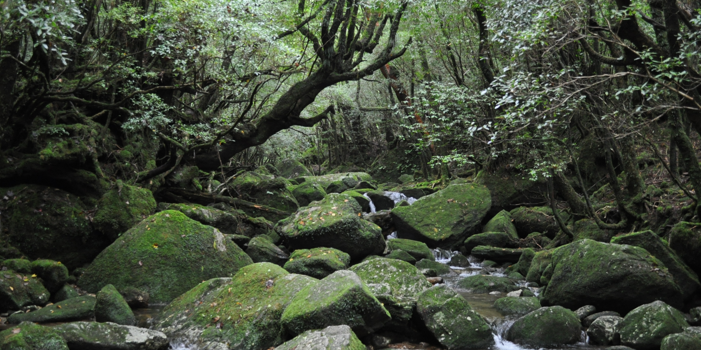

Princess Mononoke Forest
Yakushima is a small island off the coast of Japan, not as popular an island retreat as Okinawa, which is probably how it has managed to retain its beauty. Our love of Studio Ghibli was what sparked our interest in the island. The forest on Yakushima was the inspiration for the forest in Princess Mononoke. After doing further research of the isolated sub-tropical island, we discovered that it hosts some of the oldest cedar trees in Japan and mountains reaching 1800 metres high. My husband and I had been living in Japan for about 6 months by this point. We had spent our weekends in Tokyo, racked up a few visits to other major cities in Japan and were in need of an escape from the hustle and bustle. We were hesitant at first as it is not particularly easy or cheap to get to Yakushima from Tokyo and it was during typhoon season. Unsure if we would get another opportunity to go, we went for it.

The moss covered forest.
It was September 2014, we flew from Tokyo’s Narita airport to Kagoshima with the budget airline Vanilla Air. Located on Kyushu, the most southwesterly of Japan’s five islands, Kagoshima is a city that has ferry links to Yakushima. When we landed, the weather didn’t look promising and a typhoon was picking up speed nearby. Our first day was spent in the rain and seeking shelter while looking around Sakurajima, a volcanic island just off Kagoshima. We hoped for the following day to bring us clear skies and calm winds so we could get to Yakushima, but we were already debating alternative Kyushu plans. The morning arrived and we were in luck, the typhoon had diverted and the ferries were up and running.

Some animation inspiration.
The quickest method by sea from Kagoshima to Yakushima is via the Jetfoil boat. These boats depart from Kagoshima port at the south pier (Minami-Futo) and takes about two and a half hours. Buying tickets online in advance is challenging if you don’t read Japanese, but you can buy them at the south pier ticket office. The return ticket price is about 15,000yen and there are 5-7 departures every day, most depart earlier in the day. A cheaper alternative is the Ferry Yakushima, it costs 9,000yen for the return but takes an additional two hours. With our unsturdy stomachs and limited time, the Jetfoil was the winning choice. After boarding the boat, even though the seas were relatively calm, we were starting to wish we had chosen a different mode of transport. There are flights to the island from Kagoshima, Fukuoka and Osaka airports, but it was too late to turn back. Just a little nauseous, we arrived on time at the Yakushima Miyanoura port. We popped into the tourist information near the Miyanoura port where we picked up a map and gathered details on getting around the island.

The view of the port.
We prebooked a guest house on Trip Advisor, it was a 25-minute walk from the port but there is a bus we could have taken. We stayed in the wonderfully comfortable, friendly and clean Minshuku Yakusugiso ryokan (inn). We did rely on our Japanese to check in and I am not sure if anyone who worked there could speak English, so take your phrase book, just in case. The staff at the inn were very accommodating; they showed us the onsen (Japanese bath) and to our Japanese-style room with futon and tatami mat. On request and for a small fee, they will prepare delicious bento boxes which were ready and waiting in the morning for guests to take for hiking fuel.

Many little waterfalls.
Once we had snooped around our room and its view of the Miyanoura river, with no time to waste, we headed out. We located the bus route to Shiratani Unsuikyo forest, which was Miyazaki’s inspiration for Princess Mononoke. Conveniently, the bus stop was across the road from the inn. The scenic 30-minute bus journey treats passengers to a unrivaled view of the island as the bus crawls the mountains’ edges all the way to the entrance of the forest.

One of the oldest cedars.
Buses can be confusing for new visitors to Japan and not all the buses have the same payment system. The buses we took on Yakushima required payment at the end of the journey. When you board the bus just take a numbered ticket from the machine. You can monitor the cost of your fare by locating your ticket number on a board at the front of the bus. You can watch the price increase after each stop you pass. When you want to get off; ring the bell, wait for the bus to halt and then place your money into a machine next to the driver. The machine might not take bigger bills, so I tend to show the driver my money offerings before putting them in. There is often a separate machine for breaking bills if this is the case.

A difficult crossing.
Entrance into Shiratani Unsuikyo forest costs only 500 yen and they provide a map of the different trails with the estimated walking route times. At the entrance there is a waterfall where we stopped to take photos and decided which route to take. Unfortunately, we didn’t have time for the 4-hour hike on the Kusugawa trail as it was already creeping into the afternoon. We chose the Yayoi Sugi trail, it takes you to a 3000-year-old cedar tree and joins on to the Princess Mononoke forest trail. The walk through the forest is far from arduous but is quite the adventure. The forest trails take you along wooden bridges, up giant boulders, balancing on moss covered rocks, leaping across streams, ducking under low hanging branches while tip toeing between roots bulging out of the ground. We could have easily spent a whole day clambering through nature’s obstacle course and fiddling with the camera settings in a futile attempt to capture the full beauty of the forest. Shiratani Unsuikyo forest is hands down my top destination in Japan and I look forward to returning someday.
--Emily, 7 February 2017

Through the forest.

Climbing the boulders.